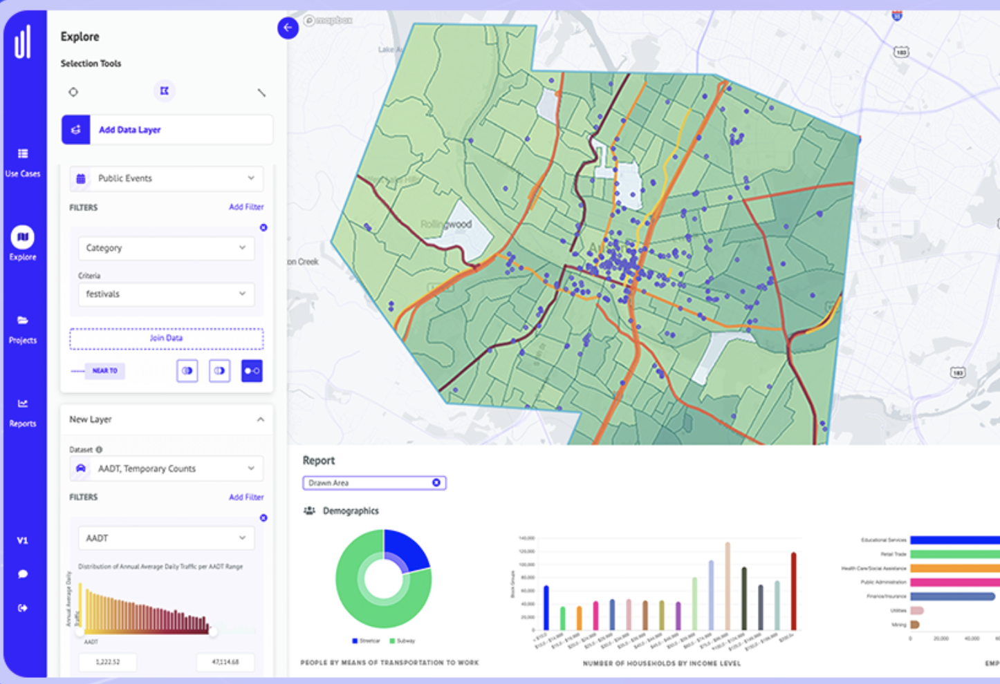
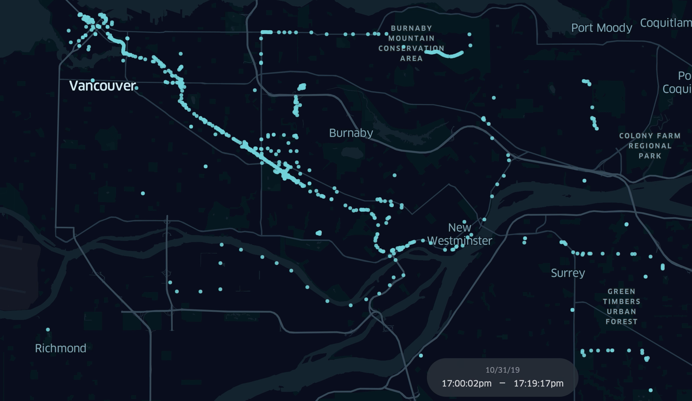
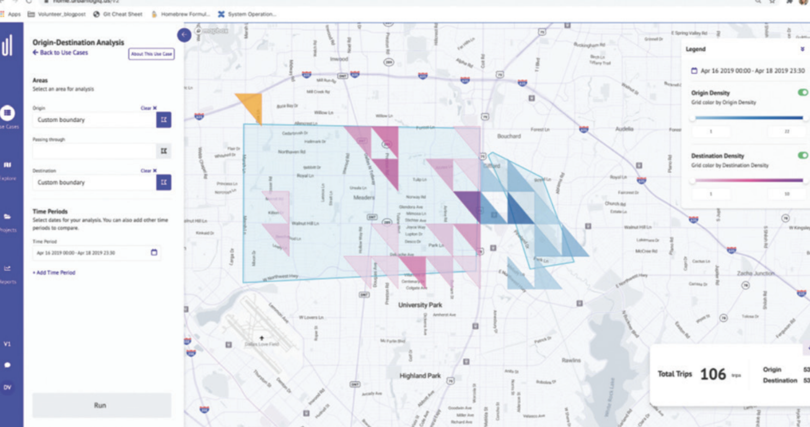
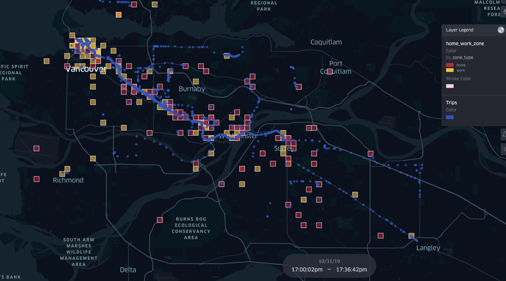
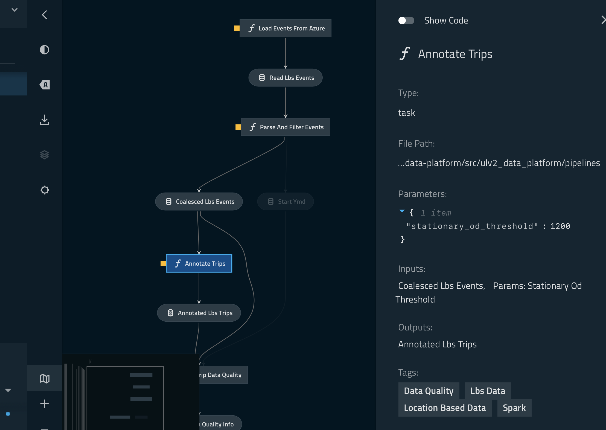
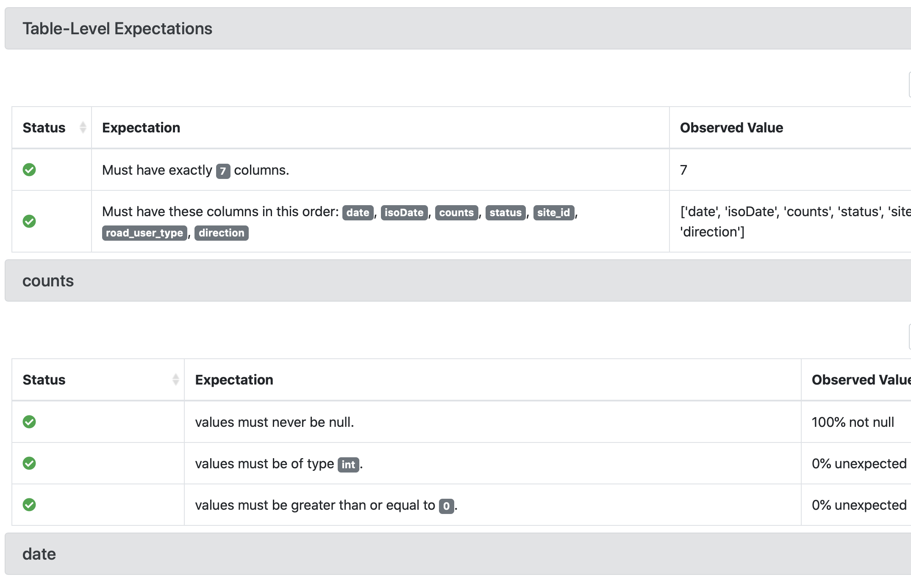

class: center, middle # Location-Based Data Engineering for Good with PySpark ## 2021 Scale By The Bay .red[Evan Chan] .red[Senior Data Engineer - [UrbanLogiq](https://urbanlogiq.com)] http://velvia.github.io/presentations/2021-lbs-data-eng-for-good-pyspark/#1 --- # UrbanLogiq  [UrbanLogiq](https://urbanlogiq.com) is a software platform that integrates and visualizes geospatial data to provide fast insights for governments. We use Rust, Python, and ML to tackle use cases spanning transportation, economic development, land management for indigenous reconciliation, and more! --- # Location-Based Data <center>  </center> * Apps used, location, timestamp (mobile device data) * Huge variety of coverages and densities * Condense into trips with origins and destinations * General mobility analysis --- # Example 1: Amenities & Accessibility Planning * Where do people who visit city parks come from, and how do they visit? * How can we plan and locate parks and recreational facilities to maximize accessibility for everyone? * Do people always go to the closest amenity? If not, why? * Location data is collated into Origin/Destination summaries, and plotted <center>  </center> --- # Example 2: Transit Planning * Aggregate trips traveling through specific transit points * Visualize end to end travel patterns for transit passengers <center>  </center> --- # Example 3: Play Streets * Streets or portions closed off to traffic to provide play spaces esp for kids, families * A big boost to many urban local communities * Location, traffic, demographic data can help inform best potential places to implement them <center> </center> --- # Data Engineering Pipeline Goals * Scalable * Reproducible * Flexible * Easy to maintain and understand * High productivity Currently: [Kedro](https://kedro.readthedocs.io/en/stable/01_introduction/01_introduction.html) (Python) ??? As an aside, have to mention that Python dominates DS and DE - just a huge concentration of important data tools --- # Kedro: Structured Data Pipelines DAG graph with each node transforming DataFrames <center>  </center> --- # Why PySpark? .left-column[ ### Kedro * Structured workflow for DS/DE * Single machine * Pandas: must fit in memory * High level data operations * Eager * Some community ] .right-column[ ### PySpark * Integrates with Kedro! * Distributed * Still Python, very easy to learn * Data does not have to fit in memory * High level data ops * Lazy * Streaming, graph, ML * No 1 most widely used data framework ] --- class: center, middle # Origin-Destination Inference ## Inferring trips from location data --- # Overall Processing Steps 1. Normalize and sessionize (sort by device ID) 2. Coalesce events in similar locations to a single event with count 3. Use inference/ML to determine which events may be an origin/destination 4. Coalesce and sort O/D pairs into trips --- # Initial Steps Spark can easily read subdirectory trees straight from Azure / AWS / GCS / etc. ```python df = spark.read.parquet("wasbs://container1@blah.blob.core.windows.net/xx/yy/zz/2020/01") return df.select( [ col("advertiser_id").alias("deviceID"), col("location_at").alias("timestamp"), col("latitude"), col("longitude"), ] ) ``` Sorting many GBs or TBs of data by device ID to sessionize - no problem! ```python return df.sort("deviceID") ``` ??? This seems obvious to anybody with a big data background but it's a big deal for folks used to tools like Pandas. --- # Initial Output (Extra columns removed for brevity) ``` +--------------------+----------+----------+------------+ | deviceID| timestamp| latitude| longitude| +--------------------+----------+----------+------------+ |0000606e153fb72d5...|1562010606| 37.17| -104.7348| |00043157f6342b342...|1562020544| 37.050922| -104.78587| |00043157f6342b342...|1562021967| 37.05095| -104.78588| |00043157f6342b342...|1562021161| 37.050922| -104.78587| |00043157f6342b342...|1562019848| 37.050922| -104.78587| |00048d7fb00ee2961...|1561941291|37.2118654|-104.9377987| |00048d7fb00ee2961...|1561953983|37.2118649|-104.9379102| |00048d7fb00ee2961...|1561974623|37.2118598|-104.9378926| |00048d7fb00ee2961...|1561948360|37.2118591|-104.9379316| |00048d7fb00ee2961...|1561973492| 37.211876|-104.9378996| |00048d7fb00ee2961...|1561957004|37.2118719|-104.9379137| |00048d7fb00ee2961...|1561940854|37.2226743|-104.9393112| |00048d7fb00ee2961...|1562014190|37.2118799|-104.9379111| |00048d7fb00ee2961...|1561944836|37.2118461|-104.9379516| |00048d7fb00ee2961...|1561950275| 37.21185|-104.9379462| ``` --- # Windowing Functions To coalesce data from multiple rows, we use windowing functions for adjacency/row state. Sliding window over data, centered around a current row, with lag (previous) and lead (next) row lookup. | Lag | Indx | deviceID| timestamp| latitude| longitude| | ---- | --: | ------------------ | -------- | -------- | ---------- | | Lag | -5 |0000606e153fb72d5...|1562010606| 37.17| -104.7348| | Lag | -4 |00043157f6342b342...|1562020544| 37.050922| -104.78587| | Lag | -3 |00043157f6342b342...|1562021967| 37.05095| -104.78588| | Lag | -2 |00043157f6342b342...|1562021161| 37.050922| -104.78587| | Lag | -1 |00043157f6342b342...|1562019848| 37.050922| -104.78587| | **Cur** | **0** |00048d7fb00ee2961...|1561941291|37.2118654|-104.9377987| | Lead | 1 |00048d7fb00ee2961...|1561953983|37.2118649|-104.9379102| | Lead | 2 |00048d7fb00ee2961...|1561974623|37.2118598|-104.9378926| | Lead | 3 |00048d7fb00ee2961...|1561948360|37.2118591|-104.9379316| --- # Coalescing: How far from my last point? ```python >>> w = Window.partitionBy("deviceID").orderBy("timestamp") >>> df1 = df.withColumn("dist_from_prev", ... F.hypot(F.col("latitude") - F.lag("latitude", 1).over(w), ... F.col("longitude") - F.lag("longitude", 1).over(w))) >>> df1.show(30) ``` Compute hypotenuse distance from last row using `lag` function ``` +--------------------+----------+----------+------------+--------------------+ | deviceID| timestamp| latitude| longitude| dist_from_prev| +--------------------+----------+----------+------------+--------------------+ |0000606e153fb72d5...|1562010606| 37.17| -104.7348| null| |00043157f6342b342...|1562019848| 37.050922| -104.78587| null| |00043157f6342b342...|1562020544| 37.050922| -104.78587| 0.0| |00043157f6342b342...|1562021161| 37.050922| -104.78587| 0.0| |00043157f6342b342...|1562021967| 37.05095| -104.78588|2.973213749604462...| |00048d7fb00ee2961...|1561939554|37.2647663|-105.0801919| null| |00048d7fb00ee2961...|1561939974|37.2693613|-105.0483915| 0.03213066238284813| ``` --- # Coalescing: First and Law Row Markers Identifying groups of events at the "same" location. ```python # True == this is first row of movement. False == moved < delta from last location df1 = df1.withColumn( "first_row", when( F.isnull(col("dist_from_prev")) | (col("dist_from_prev") > delta), True ).otherwise(False), ) # Also add a last_row column, which is true if this is the last row of a group at the same location # (or the last row of a deviceID). We use a trick - the lead windowing function lets us peek _ahead_! df1 = df1.withColumn("last_row", F.lead("first_row", 1, default=True).over(w)) ``` ``` +------------------+----------+----------+------------+-----------------+---------+--------+ | deviceID| timestamp| latitude| longitude| dist_from_prev|first_row|last_row| +------------------+----------+----------+------------+-----------------+---------+--------+ |00606e153fb72d5...|1562010606| 37.17| -104.7348| null| true| true| |043157f6342b342...|1562019848| 37.050922| -104.78587| null| true| false| |043157f6342b342...|1562020544| 37.050922| -104.78587| 0.0| false| false| |043157f6342b342...|1562021161| 37.050922| -104.78587| 0.0| false| false| |043157f6342b342...|1562021967| 37.05095| -104.78588|2.973213749604462| false| true| |048d7fb00ee2961...|1561939554|37.2647663|-105.0801919| null| true| true| |048d7fb00ee2961...|1561939974|37.2693613|-105.0483915| 0.03213066238284| true| true| |048d7fb00ee2961...|1561940425|37.2520333|-104.9769234| 0.07353875781931| true| true| ``` --- # Coalescing: Counting Events Counting rows between first_row and last_row by annotating row numbers: ```python df1 = df1.withColumn("start_row_tmp", when(col('first_row') == True, F.row_number().over(w))) df1 = df1.withColumn("count", when(col('last_row') == True, F.row_number().over(w) - F.last('start_row_tmp', ignorenulls=True).over( w.rowsBetween(Window.unboundedPreceding, 0)) + 1)) ``` ``` +----------------+----------+----------+------------+---------+--------+-------------+-----+ | deviceID| timestamp| latitude| longitude|first_row|last_row|start_row_tmp|count| +----------------+----------+----------+------------+---------+--------+-------------+-----+ |00606e153fb72d5.|1562010606| 37.17| -104.7348| true| true| 1| 1| |043157f6342b342.|1562019848| 37.050922| -104.78587| true| false| 1| null| |043157f6342b342.|1562020544| 37.050922| -104.78587| false| false| null| null| |043157f6342b342.|1562021161| 37.050922| -104.78587| false| false| null| null| |043157f6342b342.|1562021967| 37.05095| -104.78588| false| true| null| 4| |048d7fb00ee2961.|1561939554|37.2647663|-105.0801919| true| true| 1| 1| |048d7fb00ee2961.|1561939974|37.2693613|-105.0483915| true| true| 2| 1| |048d7fb00ee2961.|1561940425|37.2520333|-104.9769234| true| true| 3| 1| ``` Then you just filter! --- # Coalesced Output Similar steps to the above results in one row per still location, with duration and count. ``` +--------------------+-------------------+-------------------+----------+------------+-----+ | deviceID| start_time| end_time| latitude| longitude|count| +--------------------+-------------------+-------------------+----------+------------+-----+ |00048d7fb00ee2961...|2019-07-01 01:03:16|2019-07-01 01:03:16|37.2117575| -104.938062| 1| |00048d7fb00ee2961...|2019-07-01 01:11:02|2019-07-01 01:11:02|37.2119671|-104.9381213| 1| |00048d7fb00ee2961...|2019-07-01 01:18:50|2019-07-01 01:18:50|37.2121499|-104.9379985| 1| |00048d7fb00ee2961...|2019-07-01 01:25:56|2019-07-01 02:03:54|37.2118153|-104.9379543| 5| |00048d7fb00ee2961...|2019-07-01 02:10:56|2019-07-01 20:50:03|37.2118782|-104.9379136| 41| |0004974f7d69fabce...|2019-07-01 05:36:59|2019-07-01 05:50:39| 37.17| -104.7348| 3| |00050b0450a32bdf2...|2019-07-01 03:48:41|2019-07-01 03:48:41| 37.17| -104.7348| 1| |000519708ef821486...|2019-07-01 00:05:59|2019-07-01 03:15:09|37.0991499|-104.6567664| 52| <-- |000519708ef821486...|2019-07-01 03:25:21|2019-07-01 03:25:21|37.1217048|-104.6681935| 1| |000519708ef821486...|2019-07-01 03:25:30|2019-07-01 03:25:30|37.1577921|-104.6590861| 1| |000519708ef821486...|2019-07-01 03:41:13|2019-07-01 03:41:14|37.1836755|-104.7479479| 2| |000519708ef821486...|2019-07-01 03:44:03|2019-07-01 03:44:03|37.2383703|-104.9383777| 1| |000519708ef821486...|2019-07-01 03:47:24|2019-07-01 03:51:26|37.2519714|-104.9935522| 3| |000519708ef821486...|2019-07-01 04:03:13|2019-07-01 18:36:13|37.2469101|-104.9976047| 25| <-- |000519708ef821486...|2019-07-01 18:41:05|2019-07-01 18:56:34|37.2389395|-104.9653743| 13| ``` --- # Trip Inference from Dwell Locations We can infer trips using different methods based on patterns of staying or moving from the data. * Inference using statistical thresholds. An origin/destination is when: - A device has stayed at X location > Y minutes - The number of counts is > nn * Inference using home/work locations - The location with the longest dwell time must be the "home" location - Second longest might be an "office" - Can confirm using day of week and other assumed patterns * Inference using K-Means Clustering --- # Check our work! All inference algorithms * Are biased in some way * Needs lots of experimentation with parameters * Needs validation * eg Home/Work inference is biased against certain lifestyles --- # Using Graphs for Deeper Analysis Visualize travel patterns between places, neighborhoods, transit stops <div class="mermaid"> graph TB; stopA(Stop A) stopB(Stop B) stopC(Stop C) stopD(Stop D) stopE(Stop E) downtown(Downtown) nei1(Neighborhood 1) nei2(Neighborhood 2) nei3(Neighborhood 3) nei1-- Count 4 BUS -->stopA nei2-- Count 6 CAR -->stopA stopE-- Count 5 CAR -->nei2 stopD-- Count 2 Scooter -->nei3 stopA-- Count 10 Rail -->stopC stopA-- Count 7 BUS -->stopB stopB-- Count 4 BUS -->stopC stopC-- Count 8 Rail -->stopE stopC-- Count 5 BUS -->stopD stopA-- Count 15 WALK -->downtown </div> --- class: center, middle # Data Engineering ## Reliable Pipelines in Production --- # Deploying Data Pipelines This is a HUGE space. Did I say HUGE??? .left-column[ ### We want: * Scheduling and orchestration * Failure handling, retries * Reporting and observability tools ] .right-column[ ### Many Options * Super simple * Kubernetes job/cronjob + Kedro * FOSS frameworks * Apache [Airflow](https://airflow.apache.org) * [MLFlow](https://mlflow.org) * Cloud based * Google DataFlow * Databricks * [Astronomer.io](https://www.astronomer.io) - hosted Airflow * Higher level hosted * [Keboola](https://www.keboola.com) ] --- # Data Quality Engineering How do you minimize data bugs? They can be super nasty. * Data QA is different from services QA * Not enough to fix + re-deploy * Going back to fix old data is very $$$ * Versioning and data provenance will be key * [DVC](https://dvc.org) * Use data quality frameworks to check data and generate reports * [Great Expectations](https://great-expectations.readthedocs.io/en/latest/) * [OWL Data Sanitizer](https://github.com/ronald-smith-angel/owl-data-sanitizer) (PySpark; SQL tests) <center>  </center> --- # Data Pipeline Observability Watch this space! Lots of startups/movement. Need monitoring and alerting on data issues. * How do you know what data issues to test for? Traditional tools aren't always a great fit. * Metrics - comparing different pipeline runs and stages can be difficult * Most metrics infrastructure is not designed for transient jobs * Logging tools are not aware of complex DAGs and distributed data systems * Tracking data transformations is tough with existing tools --- # Thank You Very Much! .left-column[ * https://velvia.github.io/about * https://github.com/velvia * [@evanfchan](https://twitter.com/Evanfchan) * [IG: @platypus.arts](http://instagram.com/platypus.arts) ] .right-column[ <img src="rathtrevor_stars.jpeg" alt="Visit http://instagram.com/platypus.arts" width="90%"> ] --- class: center, middle # Extra Slides --- # A PySpark DataFrame <div class="mermaid"> graph LR; part1[Partition 1] part2[Partition 2] </div> * Spark remembers the computations you want to run and only runs them when you need results * Failures handled by recomputing from source * Can cache datasets in memory for very fast compute * Entire program optimization